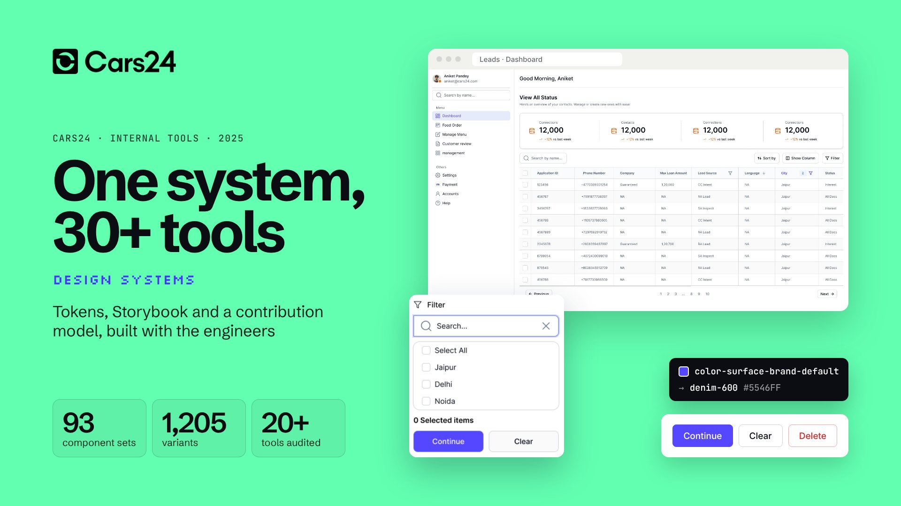
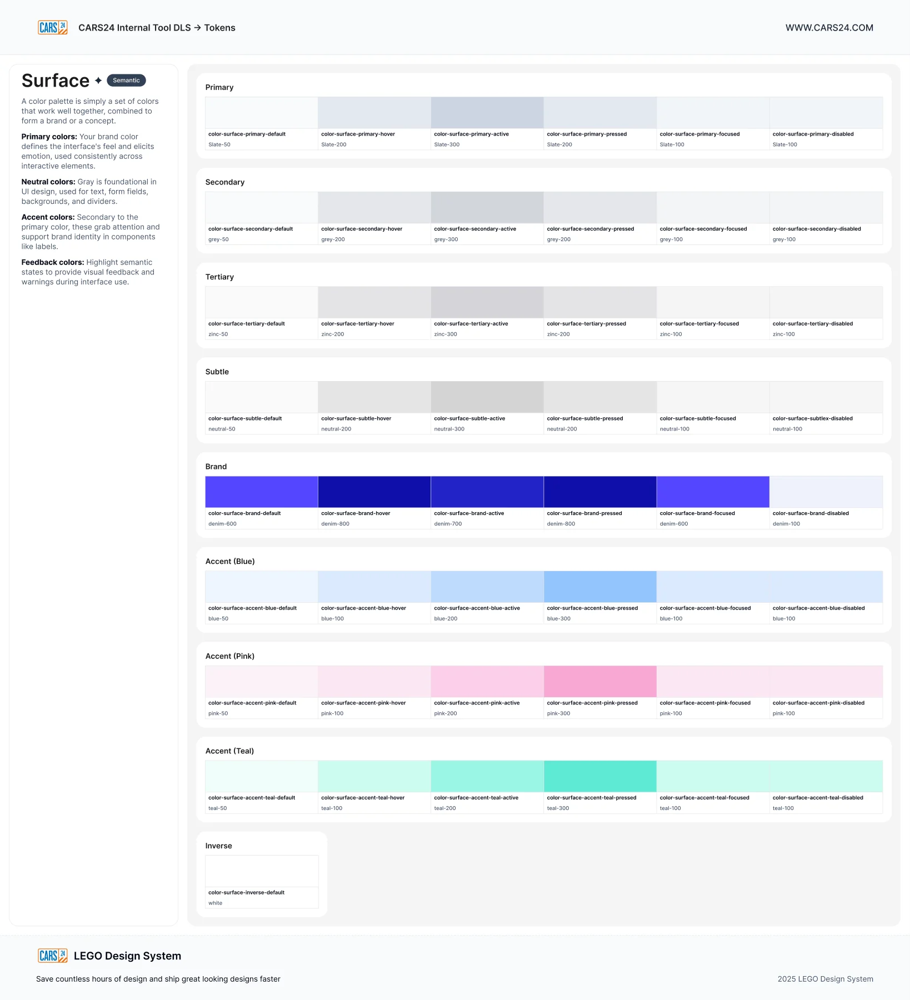
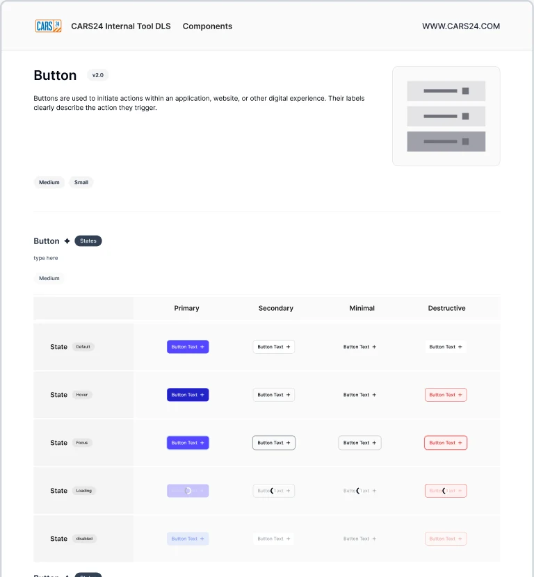
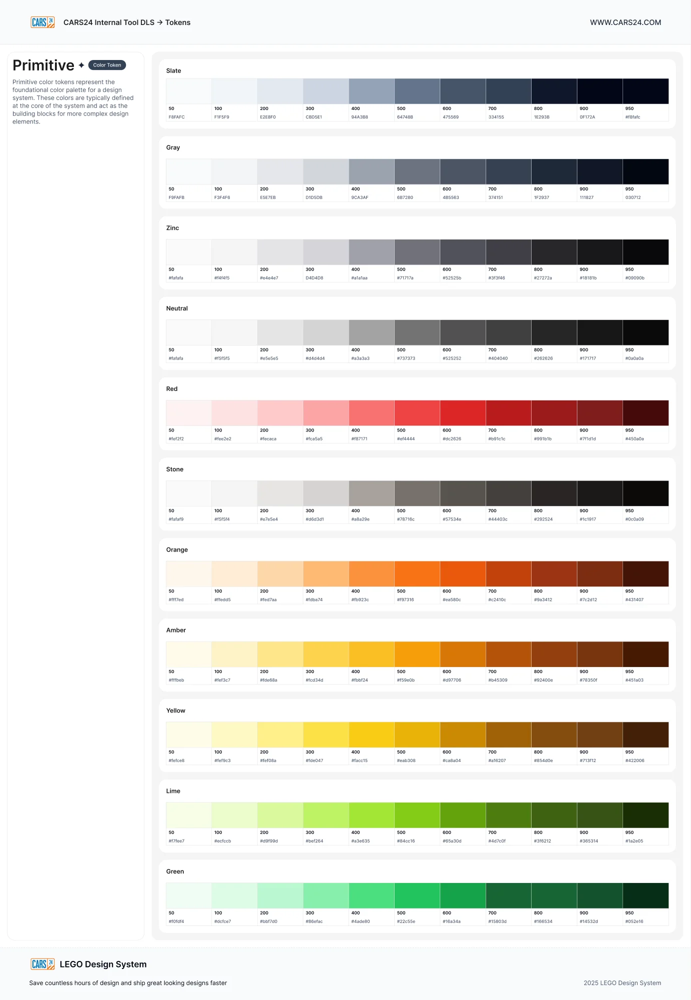
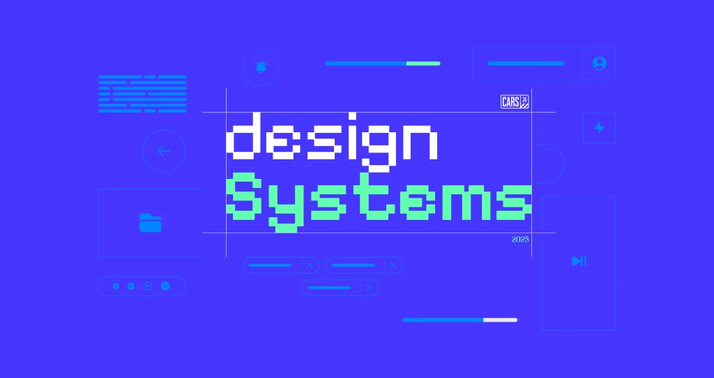
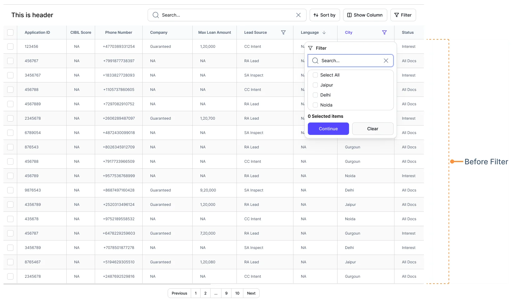
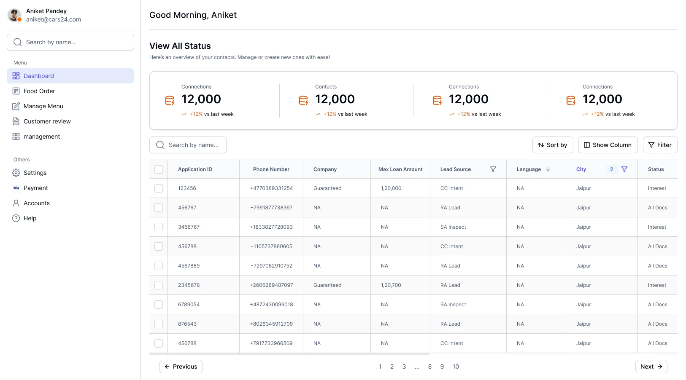

- Data table
- Filters
- Search
- Side navigation
- Top bar
- Pagination
- Status badge
- Button
Work / CARS24
 CARS24
CARS24LEGO for internal tools: one system, 30+ tools
How CARS24 audited 20+ data-heavy tools, built tokens and Storybook with engineers new to design systems, and set up a contribution model, in about four months.
- 30+
- internal tools on one system
- 20+
- tools audited, screen by screen
- 93
- component sets in Figma
- 1205
- variants, every state drawn

01 the brief:
30+ tools. No shared language.
CARS24 runs on internal tools: for loans, inspections, dealers, sales and operations. Each one had been built its own way.
- 30+
- internal tools, across every vertical
- 100+
- designers and engineers building them
- None
- shared tokens, components or docs
- 3–4
- months to a beta for leadership
Every tool team drew its own tables, filters and navigation
One library that every tool builds from
Engineers rebuilt the same data table in every tool
Build the table once, reuse it everywhere
Engineers who had never worked with a design system
Tokens and Storybook, taught from day one
Tools used by employees, dealers and partners looked unrelated
One look and feel, inside and outside the company
Internal tools are where much of CARS24 actually runs. Dealers manage their cars in them, loan teams work through lead queues, inspectors log reports and operations track every deal. Some are used only by employees; others are used by dealers and partners outside the company.
Each tool had been built by a different team, at a different time, with no shared language between design and engineering. The same table, filter bar and side navigation existed in dozens of versions. Every new tool started from a blank file.
The ask from leadership was simple: make every internal tool look and feel good, and make sure the next ones cost less to build. Better quality, fewer engineering hours, and tools that feel like one company.
How might we give 100+ people who had never used a design system one they would rely on?
02 the audit:
20+ tools, opened one by one
Before drawing anything, every screen of 20+ live tools was taken apart and sorted into components and patterns.
- 01
Get access
Logins to 20+ tools across verticals
- 02
Map the screens
Every page, dialog and state, tool by tool
- 03
Cut it apart
Each element on each screen, grouped by what it does
- 04
Find the patterns
Tables, filters, navigation and forms that repeat
- 05
Rank
By how many tools use it and how painful it was
- 06
Shortlist
What to build first, agreed with engineering
- Text input
- Dropdown
- Date picker
- Modal
- Toast
- Tabs
- Checkbox
- Breadcrumbs
- File upload
- Stepper
- Slider
- Carousel
- Avatar
- Time picker
- Accordion
- Segment control
Grouping summarised from the audit. These are dense, enterprise-style tools: the hard parts were never buttons, they were tables with tens of thousands of rows.
03 foundations first:
Tokens before a single component
The token file came first: colour, type, spacing, radius, border width, opacity, icon sizes and breakpoints.
50100200300400500600700800900950
slate
gray
zinc
neutral
stone
red
orange
amber
yellow
lime
green
11 primitive ramps of 11 steps. They follow the Tailwind scale, which most of the engineers already knew, so the first conversation was about meaning, not hex values. Hover a swatch.
Semantic surfaces: pick a role and a state
Role
State
Continue
- Semantic
color-surface-brand-default - Primitive
denim-600 - Value
#5546FF
Six of the nine surface roles, each with six states. Engineers pick a role and a state; the primitive underneath can change without touching a screen.
Spacing · 16 steps
space-3xs2space-2xs4space-xs6space-sm8space-md12space-lg14space-xl16space-2xl20space-3xl24space-4xl28space-5xl32space-6xl40space-7xl44space-8xl48space-9xl56space-10xl64Radius
radius-2xs2radius-xs4radius-sm8radius-md12radius-lg16radius-2xl24radius-full9999Breakpoints · 8
bp-xs320bp-sm480bp-md768bp-lg1024bp-xl1280bp-2xl1440bp-3xl1600bp-4xl1920Type · font-size tokens, 4 weights
--font-size-90068/68Leads
--font-size-80060/66Leads
--font-size-70048/53Leads
--font-size-60040/52Leads
--font-size-50032/45Leads
--font-size-40024/34Leads
--font-size-35020/28Leads
Each size has a matching line-height and letter-spacing token. Weights 400, 500, 600 and 700.
04 into code:
Same names in Figma and in Storybook
Engineers were new to tokens and Storybook, so both were set up together with them, one component at a time. Try the controls.
variant
size
state
label
A recreation of the Storybook setup, rebuilt in code with the button's real values from Figma: four variants, two sizes, five states.
Tokens
One source, two outputs
Design tokens exported for Figma and for code, so a change to denim-600 reaches both.
Storybook
A story per component
Every variant and state, with controls that use the same prop names as Figma.
Handoff
No redlines
Engineers read token and prop names off the component instead of measuring screens.
05 the library:
93 component sets, 1,205 variants
Every sheet carries its states, sizes and usage, and a version number.




93component sets in Figma, built from private base parts
- Button
- Icon button
- Button group
- Link
- Text input
- Text area
- Verification code
- Dropdown
- Multi select
- Search
- File upload
- Slider
- Date picker
- Range calendar
- Time picker
- Checkbox
- Radio
- Switch
- Checkbox card
- Radio card
- Switch card
- Choice chips
- Chip
- Segment control
- Alert banner
- Toast and notification
- Tooltip
- Loader
- Progress bar
- Status modal
- Modal dialogue
- Sidebar navigation
- Header
- Tabs
- Tab group
- Breadcrumbs
- Pagination
- Stepper
- Timeline stepper
- Menu
- Drawer
- Table header
- Table cell
- Table row
- Badge
- Avatar
- Card
- Carousel
- Accordion
- Divider
- Kbd
- Grid count
06 the hardest part:
The table carried the whole system
In a data-heavy tool, the table is the product. It got the most time: cells, headers, filters, density and pagination.
Loan leads
| Application ID | Phone number | Company | Lead source | City | Status | |||
|---|---|---|---|---|---|---|---|---|
| 123456 | 742 | +91 98450 31254 | Guaranteed | ₹120,000 | CC Intent | Jaipur | Interest | |
| 456767 | 688 | +91 99018 77383 | Partner | ₹85,000 | RA Lead | Delhi | All Docs | |
| 3456767 | 801 | +91 98338 27728 | Guaranteed | ₹240,000 | SA Inspect | Noida | Interest | |
| 456788 | 655 | +91 91057 37860 | Partner | ₹60,000 | CC Intent | Gurgaon | All Docs | |
| 4567889 | 712 | +91 97290 82910 | Guaranteed | ₹150,000 | RA Lead | Jaipur | Approved | |
| 2345678 | 774 | +91 96062 89487 | Guaranteed | ₹120,700 | RA Lead | Delhi | Interest | |
| 6789054 | 630 | +91 98724 30099 | Partner | ₹45,000 | SA Inspect | Noida | Rejected | |
| 876543 | 795 | +91 98026 34591 | Guaranteed | ₹320,000 | RA Lead | Gurgaon | Approved | |
| 9876543 | 701 | +91 98687 49716 | Guaranteed | ₹92,000 | SA Inspect | Delhi | All Docs | |
| 4356789 | 668 | +91 92520 31349 | Partner | ₹120,000 | RA Lead | Jaipur | Interest |
10 of 10 leads123…10
Rebuilt in code with the system's table columns. Sort the scores, filter by city, change the row height. Data is made up.
From the Figma file

1234 567- Search across every column
- Sort by any column
- Show and hide columns
- Filters that combine
- Bulk select, for actions on many rows
- A filter on one column, with its own search
- Pagination for tens of thousands of rows

07 written for engineers:
Docs that answer the next question
Every component page says what it is, when to use it, its specs, and what not to do.
ToastFeedback- Variants
- error · warning · success · info · neutral
- Styles
- filled · lighter · stroke
- Sizes
- 32px · 40px (default) · 132px with description
- Spacing
- 16px gap · 10px sides · radius 8px / 12px
- Behaviour
- One or two at a time · dismiss after 5–7s
Don't use a toast for anything the user must acknowledge.
Alert bannerFeedback- Statuses
- error · warning · success · info · neutral
- Type
- title 14 medium · body 14 regular · link 14
- Padding
- 14px × 12px · 12px between alerts
- Instead
- toast for transient news · modal to interrupt
Don't stack several banners on one dashboard.
StepperNavigation- States
- default · error · ongoing · success · disabled
- Use when
- a process has several steps the user must track
- Labels
- "Enter details", never "Step 1"
- Mobile
- switch to the vertical stepper
Don't lock navigation in a non-linear process.
All designs are tokenisedNo hard-coded colour, spacing or type. Ever.
Components are used as providedA custom version needs the maintainers' approval.
Names match FigmaSame component, prop and token names in design and code.
QA before releaseViewports, token use and accessibility, checked and written down.
Specs quoted from the component documentation in the Figma file. Help lived in one Slack channel, #design-system-help.
08 who builds what:
Teams build it. Two maintainers guard it.
The system team couldn't build everything. So the engineers who needed a component built it into the system.
Squad
8 engineers
Building internal tools across verticals. When a feature needed a component, they built it into the system.
Maintainers
2 engineers
Reviewed every contribution against the tokens, the props and the docs before it shipped.
Design
A system designer and a lead
One designer full time on the system; Aniket on direction, quality and the roadmap.
- 01
Need
A tool's roadmap needs a component
- 02
Check
Is it in the library already?
- 03
Design
Drawn on the tokens, every state
- 04
Build
The squad engineer builds it, with a story
- 05
Review
Maintainers check tokens, props, docs
- 06
Release
Published, announced in Slack
- Requested
- In design
- In build
- In review
- Released
09 the runway:
Three to four months to a beta
Leadership set the deadline. The order was fixed: understand, then foundations, then components, then process.
Audit
Access to 20+ tools, every screen taken apart, the shortlist agreed with engineering.
20+ toolsFoundations
Primitive and semantic tokens, type, spacing, radius, breakpoints. Exported for Figma and code.
100+ tokensStorybook
Set up with the squad. How tokens work, how a story works, how props map to Figma.
With 8 engineersComponents
Table, filters and navigation first, then forms and feedback. Each with docs and QA.
93 setsContribution model
Two maintainers, a review checklist, a Slack channel and a request process.
RunningBeta to leadership
The library, the docs and the first tools rebuilt on it, presented as a beta.
Shipped
Approximate months.
10 what changed:
One system behind every new tool
Library
93 component sets
1,205 variants and 100+ tokens, in beta, with a roadmap for complex patterns.
Teams
Built with, not for
A squad of 8 engineers contributed; 2 maintainers kept the bar.
Reach
CARS24's global teams
Teams building internal tools across the company were asked to start from it.
Leadership
A clear yes
Well received by the engineering teams and by leadership at the beta review.
01
In data-heavy tools, start with the table. Everything else hangs off it.
02
Teach tokens before you ship components. Engineers who understand the chain stop hard-coding.
03
Let the teams who need a component build it, and give two people the right to say no.
11 for your team:
The same playbook, as a studio engagement
Each step of this case study maps to how we work with clients now.
2 weeks, fixed
Audit
$1,500
In this case studyAccess to your tools, every screen taken apart, and a shortlist of what to build first.
See what's included6 weeks, fixedMost teams start here
Foundations
$5,900
In this case studyTokens for Figma and code, Storybook set up with your engineers, and the first components.
See what's includedMonthly, pause any time
Partner
$2,900/mo
In this case studyA contribution model, maintainers, docs and reviews, until your teams build it themselves.
See what's includedThe work above was done by our founder as a CARS24 employee. Layer One now runs the same method as a studio, for product teams of any size.
Aniket Pandey led this as Design Systems Lead at CARS24 (2025), with a system designer, a squad of eight engineers and two engineering maintainers. This is employee work, not Layer One client work. Screens and component sheets belong to CARS24 and are shown for portfolio purposes. The Storybook panel, the table and the token tools are recreated in code from the Figma values; the table data is made up and the timeline is approximate.